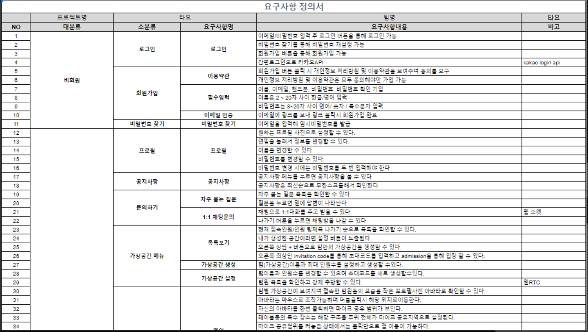
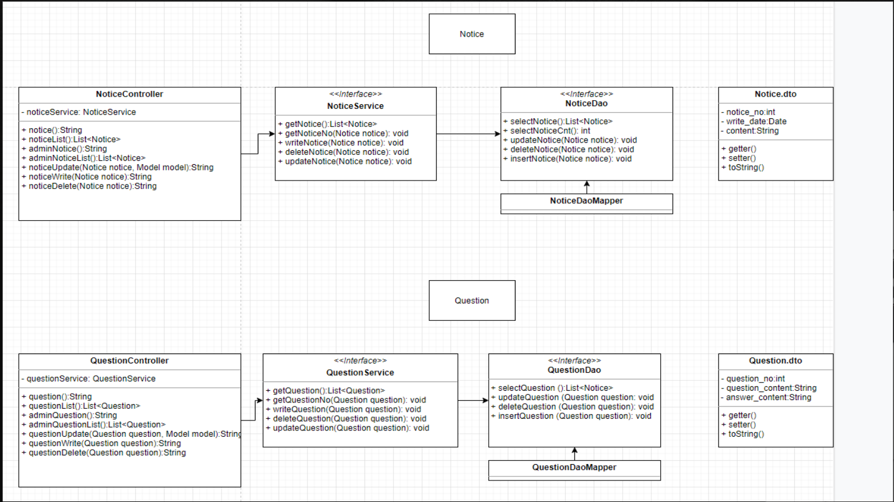
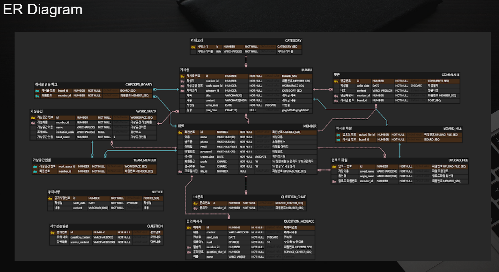

- 
- 
- 

프로젝트 일정
기획[주제, 스토리 보드, 요구사항 정의서, 유스케이스 다이어그램] 2021.10.25 ~ 2021.10.31
설계[데이터베이스 설계, ER 다이어그램, 클래스 다이어그램, 시퀀스 다이어그램] 2021.11.01 ~ 2021.11.07
구현[관리자페이지 게시판 관리/게시물 관리] 2021.11.08 ~ 2021.12.03
내가 구현한 부분
공지사항과 자주묻는 질문 사용자 페이지와 관리자 페이지를 만들었습니다.
mybatis로 오라클데이터베이스를 연동하여 사용하였습니다.
스프링 MVC 디자인 패턴을 이용하여 Controller, Model(Service), View(jsp)로 구분해서 개발하였습니다.
기능으로는 공지사항의 무한스크롤 부분을 자바스크립트와 ajax로 구현했습니다.
자주묻는 질문에서 화살표를 누르면 답변이 나타나도록 자바스크립트로 구현했습니다.
공지사항과 자주묻는 질문 관리자 페이지에서 작성, 수정, 삭제 기능을 구현했습니다.
프로젝트 하면서 느낀점
두번째 프로젝트라서 자신감있고 여유로운 마음으로 프로젝트를 진행하였습니다.
팀원들과 대화하면서 프로젝트의 방향성을 잡는 시간들이 재밌었고 기억에 남습니다.
팀원들과 소통하며 개발을 하는 것에 즐거움을 느꼇고 동기부여도 확실히 되었습니다.
타요 프로젝트를 하면서 팀원들에게 인정받고 도움이 되는 개발자가 되고싶다고 생각했습니다.